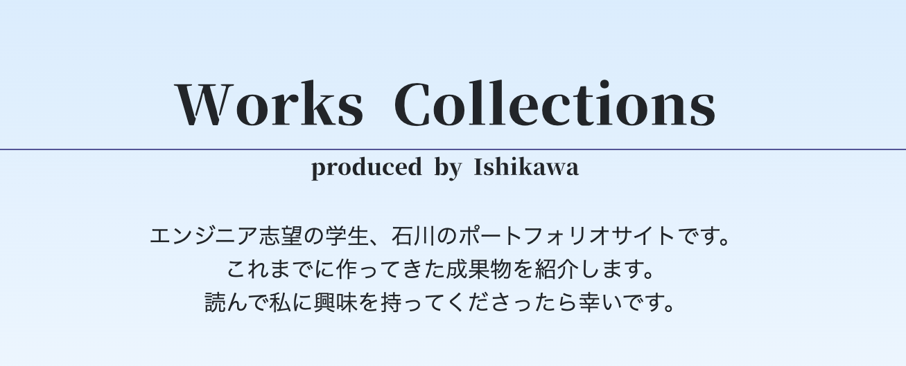

Works Collections
produced by Ishikawa

【ポートフォリオ】
種別
個人開発
概要
このサイトです。
自己紹介と、これまでに作ってきた制作物を紹介しています。
ポイント
スマホで見ても形が崩れないように、レスポンシブデザインを心がけました。
連絡方法にはGoogleフォームを使うことでメールアドレスが流出しないようにしました。
制作理由
自分の作ったものを見て欲しいという思いから作りました。
開発期間
2022年8月〜（随時更新）
使用技術
HTML、CSS、JavaScript
リンク
https://kuroneko2828.github.io/
戻る